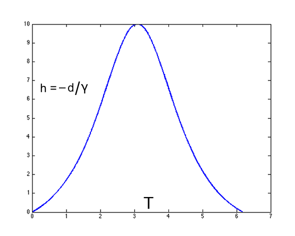

Thanks to Alan R. Wilson for correcting a two-word typo involving GPS satellites.
Thanks to Aron Yoffe for suggesting the newtonian comparison.
Thanks to Tom Fuchs for suggesting the analogy to the stone thrown upwards.
Fuel numbers added by Don Koks, 2004.
Updated by Phil Gibbs, 1998.
Thanks to Bill Woods for correcting the fuel equation.
Original by Philip Gibbs, 1996.
The theory of relativity sets a severe limit to our ability to explore the galaxy in space ships. As an object approaches the speed of light, more and more energy is needed to maintain its acceleration, with the result that to reach the speed of light, an infinite amount of energy would be required. It seems that the speed of light is an absolute barrier which cannot be reached or surpassed by massive objects (see the FAQ article on faster than light travel). Given that our galaxy is about 80,000 light years across, there seems little hope for us to get very far in galactic terms.
Science fiction writers might make use of worm holes or warp drives to overcome this restriction, but it is not clear that such things can ever be made to work in reality. Another way to get around the problem may be to use the relativistic effects of time dilation and length contraction to cover large distances within a reasonable time span for those aboard a space ship. When a rocket accelerates at $1\;\text{g}$ (9.81 m/s$^2$), its crew experiences the equivalent of a gravitational field with the same strength as that on Earth. If this acceleration could be maintained for long enough, the crew would eventually reap the benefits of the relativistic effects that increase the effective rate of travel.
What then, are the appropriate equations for the relativistic rocket?
First of all, we need to be clear what we mean by continuous acceleration at $1\;\text{g}$. The acceleration of the rocket must be measured at any given instant in a non-accelerating frame of reference travelling at the same instantaneous speed as the rocket (see the FAQ article on accelerating clocks), because this is the acceleration that its occupants would physically feel—and we want them to accelerate at a comfortable rate that has the effect of mimicking their weight on Earth. We'll call this acceleration $a$. The proper time measured by the crew of the rocket (i.e. how much they age) is called $T$, and the time measured in the non-accelerating frame of reference in which they started (e.g. Earth) is $t$. We assume that the stars are essentially at rest in this Earth frame. The distance covered by the rocket as measured in this frame of reference is $d$, and the rocket's velocity is $v$. The time dilation or length-contraction factor at any instant is the gamma factor $\gamma$.
The relativistic equations for a rocket with constant positive acceleration $a > 0$ are the following. First, define the hyperbolic trigonometric functions sh, ch, and th (also known as sinh, cosh, and tanh): \begin{align} \text{sh } x &= (e^x - e^{-x})/2 \,,\\ \text{ch } x &= (e^x + e^{-x})/2 \,,\\ \text{th } x &= \text{sh } x/\text{ch } x \,. \end{align} Using these, the rocket equations are
\begin{align} t &= {c\over a} \text{sh}{aT\over c} = \sqrt{(d/c)^2 + 2d/a\,} \,,\\[1ex] T &= {c\over a} \text{sh}^{-1}{at\over c} = {c\over a} \text{ch}^{-1} (ad/c^2 + 1) \,,\\[1ex] d &= {c^2\over a} \left(\text{ch}{aT\over c} - 1\right) = {c^2\over a} \left(\sqrt{1 + (at/c)^2\,} - 1\right) \,,\\[1ex] v &= c\; \text{th}{aT\over c} = {at\over \sqrt{1 + (at/c)^2}\,} \,,\\[1ex] \gamma &= \text{ch}{aT\over c} = \sqrt{1 + (at/c)^2\,} = ad/c^2 + 1 \,. \end{align}These equations are valid in any consistent system of units, such as seconds for time, metres for distance, metres per second for speeds and metres per second squared for accelerations. In these units $c\simeq 3 \times 10^8$ m/s. To do some example calculations, it's easier to use units of years for time and light years ("ly") for distance. Then $c = 1$ ly/yr and $g\simeq 1.03$ ly/yr$^2$. Here are some typical values of the various parameters for $a = 1$ g. \begin{array}{lllll} \hline T\text{ (years)} & t\text{ (years)} & d\text{ (ly)} & v/c & \gamma\\ \hline 1 & 1.19 & 0.56 & 0.77 & 1.58 \\ 2 & 3.75 & 2.90 & 0.97 & 3.99 \\ 5 & 83.7 & 82.7 & 0.99993 & 86.2 \\ 8 & 1840 & 1839 & 0.9999998 & 1895 \\ 12 & 113,\!243 & 113,\!242 & 0.99999999996 & 116,\!641 \\ \hline \end{array}
In theory, then, you can travel across the galaxy in just 12 years of your own time. If you want to arrive at your destination and stop, then let's say you turn your rocket around at the halfway point and decelerate at 1 g. In that case it will take nearly twice as long in terms of proper time $T$ for the longer journeys; the elapsed time $t$ on Earth will be only a little longer, since in both cases the rocket is spending most of its time at a speed near that of light. We can still use the above equations to work this out, since although the acceleration is now negative, we can "run the film backwards" to reason that they must still apply. Here's the general formula: $$ T = {2c\over g}\, \text{ch}^{-1}\left({gd\over 2c^2} + 1\right) . $$ Here are some of the times you will age when journeying to a few well known space marks, arriving at low speed: \begin{array}{lll} \hline d\text{ (ly)} & \text{Stopping at:} & T\text{ (years)} \\ \hline 4.3 & \text{Nearest star} & 3.6 \\ 27 & \text{Vega} & 6.6 \\ 30,\!000 & \text{Centre of our galaxy} & 20 \\ 2,\!000,\!000 & \text{Andromeda Galaxy} & 28 \\ n & \text{Anywhere, but see} & 1.94\, \text{ch}^{-1}(n/1.94 + 1) \\[-1ex] & \text{next sentence} & \\ \hline \end{array} For distances greater than about a thousand million light years, the formulae given here are inadequate because the universe is expanding. General Relativity would have to be used to work out those cases.
If you wish to pass by a distant star and return to Earth, but you don't need to stop there, then a looping route is better than a straight-out-and-back route. A good course might be to head out at constant acceleration in a direction at about 45° to that of your destination. At the appropriate point, you start a long arc such that the centrifugal acceleration you experience is also equivalent to Earth's gravity. After 3/4 of a circle, you decelerate in a straight line until you arrive home.
To experiment with the quantities above, see David Wright's INTO THE FUTURE web page.
As a comparison to the above values of $T$, what if relativity didn't apply: that is, how would $T$ depend on $d$ in a fully newtonian universe, so that the rocket could accelerate at $1\;\text{g}$ forever? We'll call the elapsed time $T'$ here so as not to confuse it with the $T$ above that we are going to compare it with. Begin with the usual equation for constant acceleration from a standing start, "$\text{displacement} = 1/2 \times \text{acceleration} \times \text{time}^2$". Consider that, by symmetry, $T'/2$ is the time to get to the half-way point, so $$ d/2 = 1/2 \,\; a \, (T'/2)^2 \,, $$ which means that $$ T' = 2 \sqrt{d/a\,} \,. $$ With $d = n$ light years and $a = 1\;\text{g} = 1.03$ ly/yr$^2$, this becomes $$ T' = 1.97\sqrt{n\,}\;\text{years}. $$
Here is the above table amended to include comparison values of $T'$: \begin{array}{llll} \hline d\text{ (ly)} & \text{Stopping at:} & T\text{ [relativistic universe] (years)} & T'\text{ [newtonian universe] (years)} \\ \hline 4.3 & \text{Nearest star} & 3.6 & 4.1 \\ 27 & \text{Vega} & 6.6 & 10.2 \\ 30,\!000 & \text{Centre of our galaxy} & 20 & 341 \\ 2,\!000,\!000 & \text{Andromeda Galaxy} & 28 & 2786 \\ n & \text{Anywhere} & 1.94\, \text{ch}^{-1}(n/1.94 + 1) & 1.97 \sqrt{n\,}\\ \hline \end{array} You can see that in our relativistic universe, even though the rocket's speed is limited to the speed of light (unlike in the newtonian universe, which has no speed limit), the very high values attained by the time-dilation factor $\gamma$ on long trips ensure that the relativistic rocket passengers still age far, far less than do the newtonian passengers undergoing the same trip.
But now, back to the relativistic rocket...
In the rocket, you can make measurements of the world around you. One thing you might do is ask how the distance to an interesting star you are headed towards changes with $T$, the time on your clock. At blast-off ($t = T = 0$) the rocket is at rest, so this distance initially equals the distance $D$ to the star in the non-accelerating frame. But once you are moving, however you choose to measure this distance, at each moment it will be reduced by your current distance $d$ travelled in the non-accelerating frame, as well as the whole lot contracted by the current factor of $\gamma$. Eventually you will pass the star and it will recede behind you. The distance you measure to it at time $T$ is \begin{equation}\label{D-d-on-gamma} {D - d\over \gamma} = {D + c^2/a\over \text{ch}(aT/c)} - {c^2\over a} \,. \end{equation} A plot of this distance as a function of $T$ shows that, as expected, it starts at $D$, then reduces to zero as you pass the star. Then it becomes negative as the star moves behind you. As $T$ goes to infinity, the distance asymptotes to a value of $-c^2/a$. That means that from your vantage point in the rocket, everything in the universe is falling from "above" to "below" the rocket, but never receding any farther than a distance of $-c^2/a$ as measured by you. It all piles up just short of this distance, asymptoting to a plane called a horizon. You see this horizon actually form as the rocket accelerates, because there comes a time when no signal emitted from "below" the horizon can ever reach you. Everything falls towards that plane, and as each object approaches that plane you see it begin to redden and fade, due to the increasing red shift of its light, because you are accelerating. Finally it fades out of visibility. In fact, as anything gets closer to the horizon, its rate of ageing as measured by you slows more and more; time comes to a complete halt on the horizon. The horizon is a dark plane that appears to be swallowing everything in the universe! But of course, nothing strange is noticed by the non-accelerating Earth observers. There is no horizon anywhere for them.
Whereas time slows to a stop a certain distance below the rocket, it speeds up above the rocket (that is, in the direction in which it's travelling from Earth's perspective). This effect could, in principle, be measured inside the rocket too: a clock attached to the rocket's ceiling (i.e. in the rocket's "nose") ages faster than a clock attached to its floor.
For a standard-sized rocket with a survivable acceleration, this difference in how fast things age within its cabin is very small. Even so, it tells us something fundamental about gravity, via Einstein's equivalence principle. Einstein postulated that any experiment done in a real gravitational field—provided that experiment has a "small" extent in space and time—will give a result indistinguishable from the same experiment done in the above "uniformly accelerating" rocket. These space and time extents must be small so that no "tidal" effect due to the inhomogeneous nature of the real gravity field will be apparent. Analogously, even though Earth is not flat, we can treat it as being flat on a small patch of ground: by this we mean that as we consider smaller and smaller patches of ground, the error we make by treating each patch as flat grows smaller at a faster rate than the size of the patch decreases. In a similar way, the errors we make by treating the gravity in a sequence of ever-smaller regions of spacetime as equivalent to the interior of a uniformly accelerated rocket in the absence of gravity decrease at a faster rate than do the sizes of those spacetime regions. So the idea that the rocket's ceiling ages faster than its floor (and that includes the ageing of any bugs sitting on these) transfers to gravity: the ceiling of the room in which you now sit is ageing faster than its floor; and your head is ageing faster than your feet. This has nothing to do with your centripetal acceleration as Earth turns; it is purely about Earth's gravitational field.
This difference in ageing rates on Earth has been verified experimentally. It is the content of Einstein's general theory of relativity, and for the weak gravity that exists in Earth's vicinity, we can get quite a good precision by calling in the analogy of the rocket and invoking the equivalence principle. And general relativity goes on to make itself felt in the GPS satellite system. Because the satellites that broadcast data to your GPS receiver are ageing quickly compared to clocks on Earth, they must be set to "tick" slightly slowly in the factory by the same factor, before they are sent up to orbit. That way, once they are in orbit, they will tick at the same rate as clocks on Earth.
We can use the above equation for the distance $(D - d)/\gamma$ that you measure to your destination star to illustrate the equivalence principle. As you accelerated from Earth and headed towards that star, it was as if the star began falling towards you with an acceleration of $a$. After a time measured by you as $T$, the distance you measure to the star is equation \eqref{D-d-on-gamma} above. Suppose that either your acceleration $a$ is small enough, or the time interval $T$ is small enough, so that the quantity $aT$ is much less than the speed of light $c$; in other words, $aT/c \ll 1$. Now consider that for any $x$, the hyperbolic cosine can be written as a series $$ \text{ch}\; x = 1 + {x^2\over 2\textit{!}} + {x^4\over 4\textit{!}} + {x^6\over 6\textit{!}} + \dots \,. $$ Set $x = aT/c$ and, because $x$ is small, drop all terms in the expansion of the hyperbolic cosine higher than $x^2$. Further, remember that for all $|x| < 1$ we can write $$ {1\over 1+x} = 1 - x + x^2 - x^3 + \dots \,, $$ in which case $$ {1\over \text{ch}\;x} \simeq 1 - x^2/2 \quad \text{for } |x| < 1 \,. $$ In that case, we can approximate the distance you measure to the star as \begin{align} {D - d\over \gamma} &= {D + c^2/a \over \text{ch}(aT/c)} - {c^2\over a} \\[1ex] &\simeq \left(D + {c^2\over a}\right) \left[1 - {a^2 T^2\over 2c^2}\right] - {c^2\over a} \\[1ex] &= D + {c^2\over a} - {D a^2 T^2\over 2c^2} - {aT^2\over 2} - {c^2\over a} \\[1ex] &= D - {D a^2 T^2\over 2c^2} - {aT^2\over 2} . \end{align} The second term in the last line divided by the third term equals $Da/c^2$. When $D$ and $a$ aren't too large (meaning $Da/c^2$ is much less than 1), we can then ignore the second term, to write the distance you measure to the star as $$ \text{distance to star} \simeq D - aT^2/2 \,. $$ Now, what would Newton say? He'd say that the star had been falling towards you for a time $T$ with acceleration $a$, in which case it must've covered a distance of $aT^2/2$ from its original distance from you of $D$; he'd thus conclude its distance from you is $D - aT^2/2$ exactly. So you can see that his non-relativistic result agrees with the relativistic one when the combinations of the various parameters are much less than the speed of light. That's how the equivalence principle works.
Sadly, there are a few technical difficulties you will have to overcome before you can head off into space. One of these difficulties is creating your propulsion system and generating fuel. The most efficient theoretical way to propel the rocket is to use a "photon drive". This would convert mass to photons or other massless particles which shoot out the back of the rocket. Perhaps this may even be technically feasible if we ever produce an antimatter-driven "graser" (gamma-ray laser).
Remember that energy is equivalent to mass, so provided mass can be converted to 100% radiation by means of matter–antimatter annihilation, we just want to find the mass $M$ of the fuel required to accelerate the payload $m$. The answer is most easily worked out by conservation of energy and momentum.
The total momentum before blast-off is zero in the Earth frame: $$ p_\text{initial} = 0 \,. $$ At the trip's end the fuel has all been converted to light with momentum of magnitude $E_L/c$, but in the opposite direction to the rocket. So the final momentum is $$ p_\text{final} = \gamma\, mv - E_L/c \,. $$ By conservation of momentum these two momentua must be equal, so our second conservation equation is: \begin{equation}\label{old-2} 0 = \gamma\, mv - E_L/c \,. \end{equation} Eliminating $E_L$ from equations \eqref{old-1} and \eqref{old-2} gives $$ (M+m)c^2 - \gamma\, mc^2 = \gamma \,mvc \,, $$ so that the fuel-to-payload ratio is $$ M/m = \gamma (1 + v/c) - 1 \,. $$ This equation is true irrespective of how the ship accelerates to velocity $v$, but if it accelerates at a constant apparent rate $a$, then \begin{align} M/m &= \gamma (1 + v/c) - 1\\[1ex] &= \text{ch}(aT/c)\,[1 + \text{th}(aT/c)] - 1\\[1ex] &= \exp(aT/c) - 1 \,. \end{align}
How much fuel is this? The next chart shows the amount of fuel needed ($M$) for every kilogramme of payload ($m = 1$ kg). \begin{array}{lll} \hline d\text{ (ly)} & \text{Sailing past} & M \\[-1ex] & \text{without stopping} & \\ \hline 4.3 & \text{Nearest star} & 10\; \text{kg} \\ 27 & \text{Vega} & 57\; \text{kg} \\ 30,\!000 & \text{Centre of our galaxy} & 62\; \text{tonnes} \\ 2,\!000,\!000 & \text{Andromeda Galaxy} & 4100\; \text{tonnes} \\ \hline \end{array} This is a lot of fuel—and remember, we are using a motor that is 100% efficient!
What if we prefer to stop at the destination? We accelerate to the half-way point at $1\;\text{g}$ and then immediately switch the direction of our rocket so that we now decelerate at $1\;\text{g}$ for the second half of the trip. The calculations here are just a little more involved since the trip is now in two distinct halves (and the equations at the top assume a positive acceleration only). Even so, the answer turns out to have exactly the same form: $M/m = \exp(aT/c) - 1$, except that the proper time $T$ is now almost twice as large as for the non-stop case, since the slowing-down rocket is losing the ageing benefits of relativistic speed. This dramatically increases the amount of fuel needed:
\begin{array}{lll} \hline d\text{ (ly)} & \text{Stopping at} & M \\ \hline 4.3 & \text{Nearest star} & 38\; \text{kg} \\ 27 & \text{Vega} & 886\; \text{kg} \\ 30,\!000 & \text{Centre of our galaxy} & 955,\!000\; \text{tonnes} \\ 2,\!000,\!000 & \text{Andromeda Galaxy} & 4.2\; \text{thousand million tonnes} \\ \hline \end{array} Compare these numbers to the previous case: they are hugely different! Why should that be? Let's take the case of Laurel and Hardy, two astronauts travelling to Vega. Laurel speeds past without stopping, and so only needs 57 kg of fuel for every 1 kg of payload. Hardy wishes to stop at Vega, and so needs 886 kg of fuel for every 1 kg of payload. Laurel takes almost 28 Earth years for the trip, while Hardy takes 29 Earth years. (They both take roughly the same amount of Earth time because they are both travelling close to speed $c$ for most of the journey.) They travel neck and neck until they've both gone half way to Vega, at which point Hardy begins to decelerate.It's useful to think of the problem in terms of relativistic mass, since this is what each rocket motor "feels" as it strives to maintain a $1\;\text{g}$ acceleration or deceleration. The relativistic mass of each traveller's rocket is continually decreasing throughout their trip (since it's being converted to exhaust energy). It turns out that at the half-way point, Laurel's total relativistic mass (for fuel plus payload) is about $28m$, and from here until the trip's end, this relativistic mass only decreases by a tiny amount, so that Laurel's rocket needs to do very little work. So at the halfway point his fuel-to-payload ratio turns out to be about 1.
For Hardy, things are different. He needs to decrease his relativistic mass to $m$ at the end where he is to stop. If his rocket's total relativistic mass at the halfway point were the same as Laurel's ($28m$), with a fuel-to-payload ratio of 1, Hardy would need to decrease the relativistic mass all the way down to $m$ at the end, which would require more fuel than Laurel had needed. But Hardy wouldn't have this much fuel on board—unless he ensures that he takes it with him initially. This extra fuel that he must carry from the start becomes more payload (a lot more), which needs yet more fuel again to carry that. So suddenly his fuel requirement has increased enormously. It turns out that at the half-way point, all this extra fuel gives Hardy's rocket a total relativistic mass of about $442m$, and his fuel-to-payload ratio turns out to be about 29.
Another way of looking at this odd situation is that both travellers know that they must take fuel on board initially to push them at $1\;\text{g}$ for the total trip time. They don't care about what's happening outside. In that case, Laurel travels for 28 Earth years but ages just 3.9 years, while Hardy travels for 29 Earth years but ages 6.6 years. So Hardy has had to sit at his controls and burn his rocket for almost twice as long as Laurel, and that has required more fuel, with even more fuel required because of the fuel-becomes-payload situation that we mentioned above.
This fuel-becomes-payload problem is well known in the space programme: part of the reason the Saturn V moon rocket was so big was that it needed yet more fuel just to carry the fuel that it was already carrying.
Well, this is probably all just too much fuel to contemplate. There are a limited number of solutions that don't violate energy–momentum conservation or require hypothetical entities such as tachyons or worm holes.
It may be possible to scoop up hydrogen as the rocket goes through space, using fusion to drive the rocket. This would have big benefits because the fuel would not have to be carried along from the start. Another possibility would be to push the rocket away using an Earth-bound graser directed onto the back of the rocket. There are a few extra technical difficulties but expect NASA to start looking at the possibilities soon :-).
You might also consider using a large rotating black hole as a gravitational catapult, but aside from whether such a thing actually exists, it would have to be very big to avoid the rocket being torn apart by tidal forces or spun at high angular speed. If there is a black hole at the centre of the Milky Way, as some astronomers think, then perhaps if you can get that far, you can use this effect to shoot you off to the next galaxy.
One major problem you would have to solve is the need for shielding. As you approach the speed of light you will be heading into an increasingly energetic and intense bombardment of cosmic rays and other particles. After only a few years of $1\;\text{g}$ acceleration, even the cosmic background radiation is Doppler shifted into a lethal heat bath that's hot enough to melt all known materials.
The equivalence principle suggests that provided we don't throw the star "too far" from a region that can be considered to have uniform gravity, we can treat the motion of this stone moving up and coming back down as identical to that of the above star. So let's use the rocket equations, but now think of the star as a stone and the rocket as a human observer, and alter the equations so that the observer moves "downwards" through the stone at time $t = 0$ (but always accelerating upwards with some $g > 0$), then slows to a stop at a distance $H$ "below" the stone, then moves back up towards the stone. A plot of the observer's motion in spacetime is still the same hyperbola that the rocket has at the top of this page, so we can mostly use the rocket equations from there; but in this new scenario the hyperbola has been shifted somewhat on the spacetime diagram relative to its origin, so we'll need to tweak the equations to produce that shift.
To do that, first consider the stone to be at a distance $H$ from the uniformly accelerated observer, who is momentarily at rest, then starts to move towards the stone (while always accelerating towards it). The stone is reached by the observer after a time $t_0 = \sqrt{H^2/c^2 + 2H/g}$. We'll offset the graph of $d$ versus $t$ so that the observer passes with negative velocity "through" the stone at $t = 0$. This only requires adding the appropriate constants to $t$ and $d$ in the expression for $d$ at the top of this page. We'll write the acceleration as $g$ to emphasise that it's a positive number: $$ d = {c^2\over g} \left(\sqrt{1 + {g^2(t-t_0)^2\over c^2}} - 1\right) - H . $$ The "height" $h$ of the stone from the observer should be computed at the observer's proper time by contracting $-d$ by $\gamma$, so $h = -d/\gamma$, where $\gamma$ here is the $\gamma$ at the top of this page evaluated at $t - t_0$. Setting the observer's proper time to be zero at his initial coincidence with the stone means using a new $T$ given by shifting the $T$ at the top of this page appropriately, giving \begin{align} T &= {c\over g} \text{sh}^{-1}{g(t-t_0)\over c} - {c\over g} \text{sh}^{-1}{-gt_0\over c}\nonumber\\[1ex] &= {c\over g} \text{sh}^{-1}{g(t-t_0)\over c} + {c\over g} \text{sh}^{-1}{gt_0\over c} \label{T-expression}. \end{align} So the height of the stone above the observer at his proper time $T$ is \begin{equation}\label{h-expression} h = {-1\over\gamma}\left[{c^2\over g} \left(\sqrt{1 + {g^2(t-t_0)^2\over c^2}} - 1\right) - H\right] , \end{equation} where $t$ is effectively now just a parameter, with $T$ given in terms of $t$ in \eqref{T-expression}. You'll need \begin{align} t_0 &= \sqrt{{H^2\over c^2} + {2H\over g}}\;,\\ \gamma &= \sqrt{1 + {g^2(t-t_0)^2\over c^2}}\;.\label{gamma-for-t-t0} \end{align}
So to plot $h$ versus $T$, the easiest thing is to select as many values of $t$ as you need, then compute the corresponding values of $h$ and $T$. Alternatively, if you really want to select your values of $T$ first, invert the expression for $T$ in \eqref{T-expression} to write $$ {g(t-t_0)\over c} = \text{sh}\left({gT\over c} - \text{sh}^{-1}{gt_0\over c}\right) , $$ then insert this $g(t-t_0)/c$ into the expression for $\gamma$ in \eqref{gamma-for-t-t0}, and then insert the values of $g(t-t_0)/c$ and $\gamma$ into the expression for $h$ in \eqref{h-expression}.You can show that this height $h(T)$ reduces to the newtonian limit by supposing that \eqref{old-1} gravity is weak: $gt_0 /c \ll 1$, and (2) we don't consider times too far outside the scenario: $g(t-t_0)/c \ll 1$. (For example, $g = 10$ m/s$^2$ while $t_0$ and $t$ equal a few seconds.) In this limit you'll find that $T \to t$, and $$ \gamma \simeq 1 + {g^2(t-t_0)^2\over 2c^2} . $$ Use the fact that $\text{sh} x \simeq x$ when $x \ll 1$, and you'll recover the newtonian limit $h(t) = \sqrt{2gH}\; t - gt^2/2$.
Now the point here is to plot $h$ versus $T$, and compare it to the usual newtonian expression for the stone's motion in space and time—which is of course a parabola. The figure shows a plot of $h$ versus $T$ for $g = 1$ light year/year$^2$, $c = 1$ light year/year (of course), and $H = 10$ light years.

You can see that from the observer's point of view, the stone initially accelerates upwards, then slows to a stop at a distance above the observer of 10 light years (there is no Lorentz contraction on this value as the relative motion of observer and stone is zero here), and finally the stone falls back towards the observer but slows down as it draws nearer.Why this apparently anomalous acceleration and deceleration? Remember that the stone is not really accelerating in an inertial frame; instead, the observer is accelerating in an inertial frame. As the observer accelerates, his standard of simultaneity changes in a non-trivial way (see the FAQ article on Do moving clocks always run slowly?). As he moves down past the stone, his "line of simultaneity" coincides with the recent past of the stone's world line and mostly translates through spacetime; then as he slows to a stop, his line of simultaneity begins to rotate in spacetime, sweeping quickly along the stone's world line until it intersects that world line in his future. Then as he picks up speed, his line of simultaneity mostly stops rotating in spacetime and simply translates again. The effect of this is that he measures the stone initially to accelerate upwards, then slow for a time, stop, accelerate back down, and then slow down shortly before it hits him. This motion might be non-intuitive, but most things in relativity are non-intuitive!
We can find the values of the parameters that will make this non-intuitive behaviour appear: just demand that the curve of $h$ versus $T$ be concave up at $T = 0$. So calculate the second derivative $h''(T)$ and demand it be positive at $T = 0$. The requirement for this to happen turns out to be $g > (\sqrt{2} - 1) c^2/H$. This means that if you want to perform such an experiment, either $g$ or $H$ will have to be very large. But uniform gravitational fields don't seem to exist in the universe, so in either case we might well depart too far from the assumptions of the equivalence principle to see the above behaviour.
This motion of objects is suggestive of current ideas in cosmology. Cosmology is built on the simplest picture of why galaxies are observed to be rushing away from us: rather than assume they really are rushing away from us, it is perhaps simpler to posit that they are all in a sense "at rest" in a universe whose very fabric (spacetime) is itself expanding, as dictated by Einstein's equations of General Relativity. In other words, if the galaxies are represented by raisins in a pudding, then we needn't imagine that the raisins are somehow racing outwards through the pudding; instead, they can be "locally at rest" in the pudding, while the entire pudding expands as it bakes. Recent observations of galactic recession have been interpreted as a sign that the universe's rate of expansion is increasing, but the above description of free fall in which an object thrown up can actually accelerate upwards demonstrates that what might at first be seen as an anomalous acceleration is actually fully in keeping with relativity. The catch, of course, is that cosmology does not treat galaxies as "objects thrown upward [or outward]". Even so, perhaps we don't need to invoke new ideas such as dark energy to explain the universe's expansion: the above scenario shows that in certain situations, an object thrown upwards can accelerate up. Our ideas of simultaneity are not always up to the job of finding these behaviours to be intuitive.
For a derivation of the rocket equations, see "Gravitation" by Misner, Thorne, and Wheeler, Section 6.2.